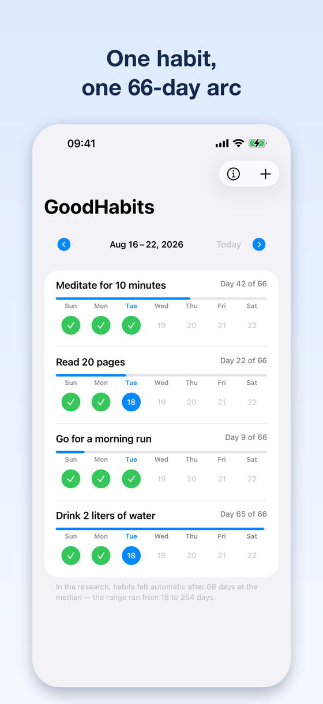
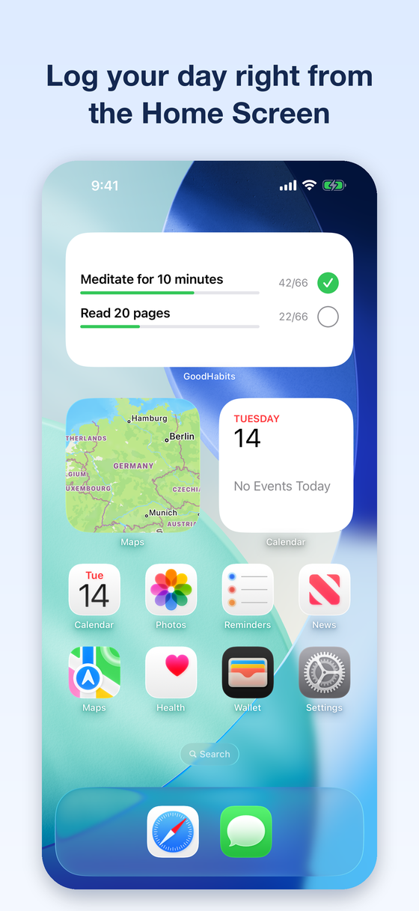
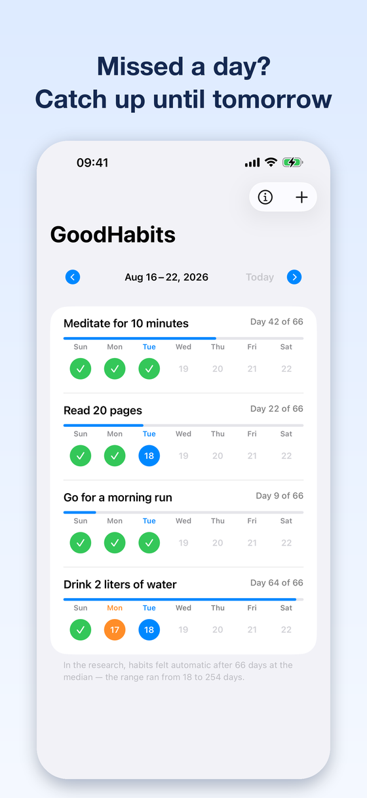
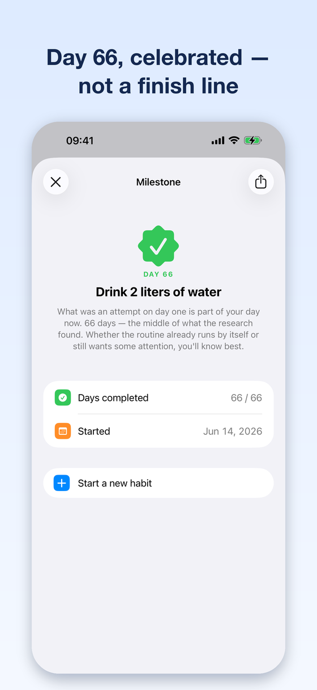
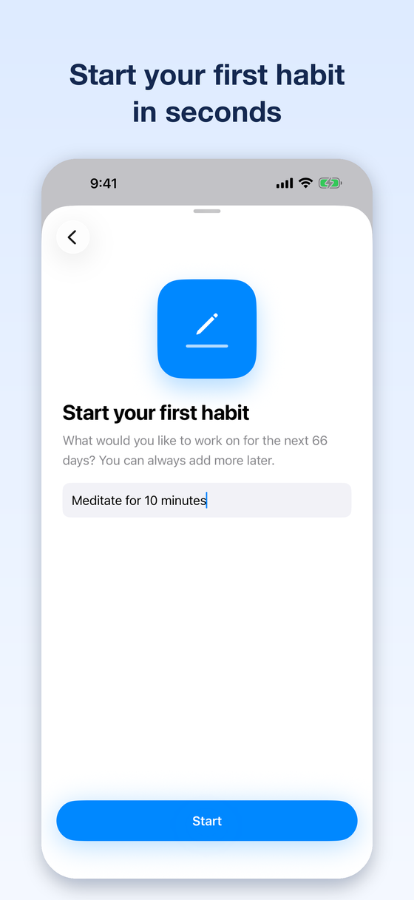

Why GoodHabits works
Real change takes real commitment
Research from University College London (Lally et al., 2010) found a median of 66 days for a behavior to become automatic — far beyond the popular 21-day myth. Sixty-six is a middle value, not a finish line: the participants ranged from 18 to 254 days. GoodHabits turns that finding into a simple tracking framework: pick a habit, log it daily, and watch your progress grow.
Daily tracking takes seconds, home screen widgets keep you accountable, and a calm, native design stays out of your way.
Source: Lally, P., van Jaarsveld, C. H. M., Potts, H. W. W., & Wardle, J. (2010). European Journal of Social Psychology, 40(6). The 66-day figure is the median of the 39 participants whose data fit the model curve — fewer than half of the sample.
Download on the App Store




Everything you need, nothing you don't
- 66-day journey per habit — the research median, not a deadline
- Interactive widgets — log today right from your Home Screen or Lock Screen
- Grace window — log a missed day until the end of the following day
- Reminders with a "Done" action, even on Apple Watch
- Full Dynamic Type and VoiceOver support
- No tracking, no analytics — your data stays on your device
Support — Frequently Asked Questions
How does the 66-day journey work?
Create a habit and check it off every day it applies. Your progress bar fills toward day 66 — the median time to automaticity in Lally et al. (2010), where individual participants took between 18 and 254 days. Reaching day 66 unlocks a milestone celebration. If it takes you longer, you are on the slower side of that range, not behind.
What happens if I miss a day?
You get a grace window: a missed day can still be logged until the end of the following day. After that, the habit's progress resets — because consistency is what forms the habit.
How do the widgets work?
Add the GoodHabits widget to your Home Screen or Lock Screen, long-press it, and choose which habit it shows. On the Home Screen you can log today directly from the widget — no need to open the app.
How do reminders work?
Set a reminder time per habit. The notification includes a "Done" action, so you can mark the habit complete right from the notification — on your iPhone or your Apple Watch.
Is GoodHabits free? What is premium?
Tracking one habit is free — the full 66-day journey, with widgets, reminders and the grace day included. Premium lets you track several habits at the same time. Already purchased? Use "Restore purchases" on the paywall to bring your purchase back on a new device.
What about my privacy?
GoodHabits contains no analytics and no tracking. Your habit data is stored locally on your device and shared only with the widget on your own phone. There is no account and no cloud sync. See the full app privacy policy and the terms of service.